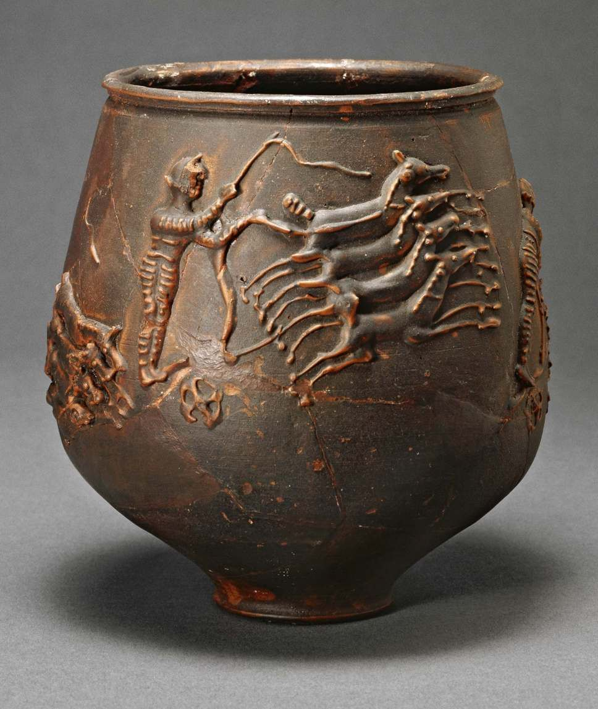
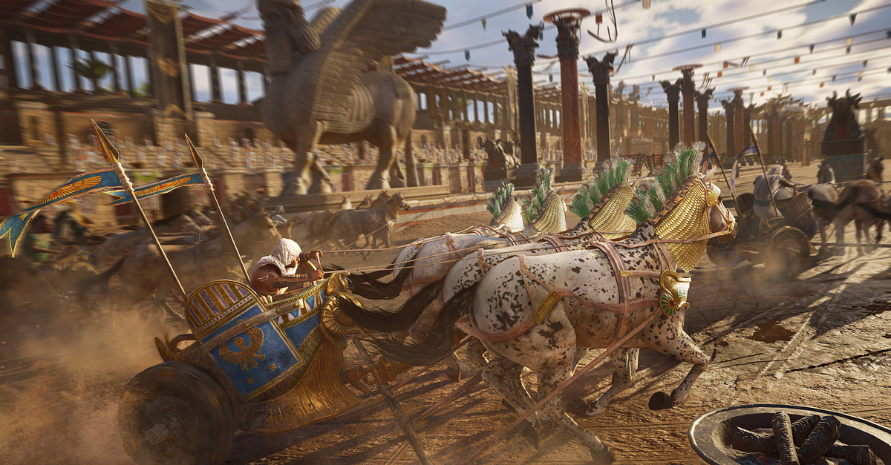

Hestvagna Kappreiðar
Kappreiðar voru ein vinsælasta dægradvöl í Íran, forn Grikklandi og í Rómaveldi. Kappreiður í Rómaveldi fóru fram líkt og flestar aðrar kappreiður, það voru knapar sem stjórnuðu hestvögnum og kepptumst um það að vera fyrstir að komast í mark. Að öllum líkindum hafa kappreiðar borist til Rómaveldis frá hinu forna Býsansríki. Það er þó ekki vitað hver uppruni kappreiða er en það eru til margskonar myndir af kappreiðum á leirpottum frá mörgum fornum samfélögum frá öllum hlutum heimsins.
Ein elsta ritaða heimildin kemur þó frá Hómeri í Hómerskviðu. Fyrsta dæmið um kappreiðar í Rómaveldi kemur frá rómverskri goðsögu, þar er sagt að Romulus (einn af stofnendum rómar) hafa haldið hátíð og boðið öllum nágrana bæunum að taka þátt, en á meðan leikarnir fóru fram fóru Romulus og hans menn og rændu konum nágranna sinna og giftu þær rómverjum til þess að útríma barbörunum í nágrenni rómar. Kappreiðar fóru fram á risastórum leikvang sem var lagaður líkt og byssukúla, í miðjum leikvangnum var rími sem náði allan leikvanginn líkt og löng umferðareyja. Inni í þessari umferðareyju voru margvíslegar styttur sem var hallað til þess að láta áhorfendur vita hversu margir hringir voru búnir af keppninni. Áhorfendur sátu allan hringinn í kringum brautina og gat stærsti leikvangurinn haldið allt að 200 þúsund áhorfendum, sem gerir hann stærsta íþróttaleikvang sögunnar.

Knur máttu horfa á kappreiðar, sem var nokkuð óhefbundið í Rómaveldi vegna þess að konur máttu oftar en ekki fylgjast með íþrótta viðburðum. Kappreiðar í Rómaveldi gegnu þannig fyrir sig að keppendur riðu sjö hringi og allt að tólf keppendur kepptu í einu. Kappreiðar voru ofboðslega hættulegar vegna þess að hestvagnarnir voru gerðir eins lettir og mögulegt var og voru þar af leiðandi afar valtir. Kappreiðar voru ofboðslega vinsælar i Rómaveldi, en eftir fall vestur-Rómaveldis minnkuðu vinsældir þeirra ofboðslega mikið i vestrinu en voru en miklar i austrinu.
